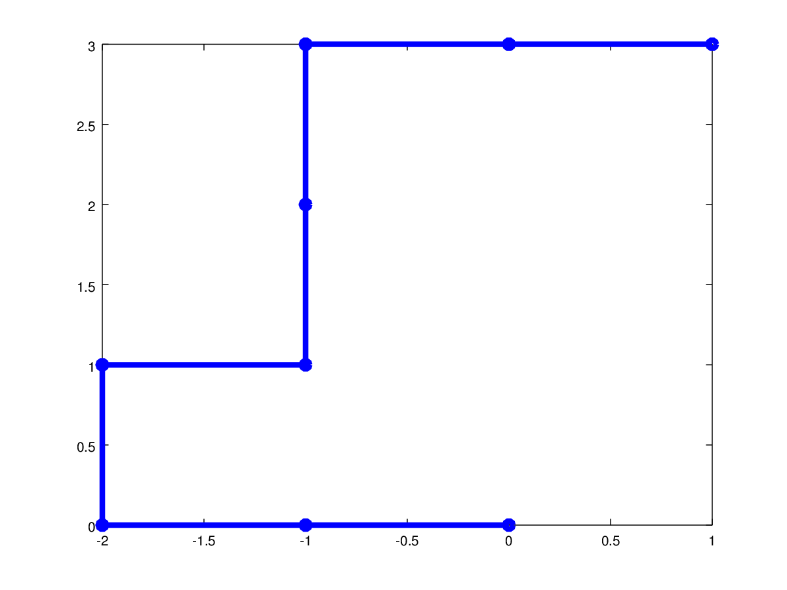
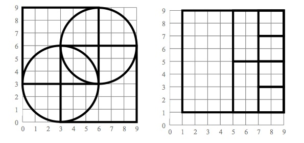

Siguiente: Evaluaciones autónomas Subir: Ejercicios Anterior: Ejercicios autónomos 1
994,919,815,862,1140,890,865,1120,1170,701,1160,701,901,874,744,742,874,963,1120,1010
a) Realice un muestreo aleatorio simple con reemplazo con un tamaño de muestra n.
b) Realice un muestreo aleatorio simple sin reemplazo con un tamaño de muestra n.
c) Calcule la media de la muestra.

Consultar dudas en clase.
(Opcional) Utilice pyplot o turtle para representar la figura mostrada a continuación.
